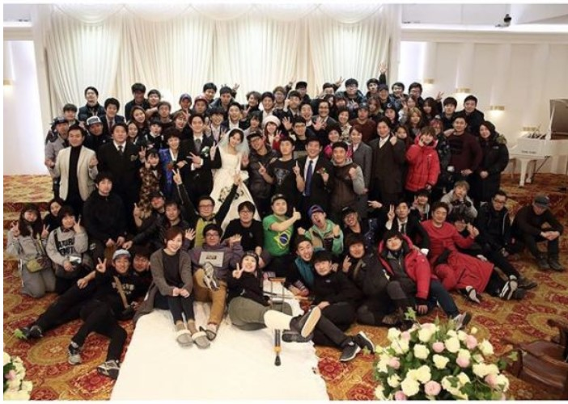

该剧主要讲述了1988年在首尔市道峰区双门洞居住的五家人的故事，描绘温暖的亲情、邻里街坊小市民传统的爱情与友情的故事。
故事以1988年汉城（今首尔）奥运会为故事背景，讲述住在首尔市道峰区双门洞的五个家庭的故事，
这五个家庭的孩子中，都生于1971年的德善、善宇、东龙、崔泽、正焕。是从小一起长大的好朋友，
1988年正处于他们18岁的青春年华，他们有共同的兴趣，还有共同崇拜的偶像，在这五个男女中也有暧昧的男女情愫，
在那个纯真的年代，他们共谱了许多美好的记忆。
请回答1988的获奖情况
第52届百想艺术大赏 (2016)
电视类 最佳电视剧(提名)
电视类 最佳导演 申元浩
电视类 最佳女主角奖(提名) 罗美兰
电视类 最佳新人男演员 柳俊烈
电视类 最佳新人男演员(提名) 安宰弘 / 李东辉
电视类 最佳新人女演员(提名) 柳慧英 / 李惠利
电视类 最佳剧本(提名) 李祐汀
电视类 最佳人气男演员(提名) 朴宝剑 / 柳俊烈
电视类 最佳人气女演员(提名) 李惠利 / 罗美兰
第6届豆瓣电影年度榜单 (2019)
2010s剧集
第2届豆瓣电影年度榜单 (2015)
评分最高的韩剧

现场视频